Visualizing training and sampling
Before using the model creatively, I took one photo apart the way flow matching sees it: blend it with noise, ask the model which way the clean image lies, and follow that direction, first in one jump and then in many small steps.
Flow matching connects Gaussian noise and real images with straight lines. Given noise x0 = ε and a clean image x1, every point on the path is a blend of the two:
so t = 0 is pure noise and t = 1 is the clean image. A network vθ is trained to predict the path's velocity, the direction from noise to image, from the blended point alone (c is the text condition):
To generate, start at noise and follow the learned velocity field from t = 0 to t = 1, i.e. integrate dxt/dt = vθ(xt, t, c).
Setup
I used the pretrained PixNerd-XXL-P16-T2I model, which works directly on 512×512 pixels; nothing was trained. All of Section 1 conditions on the prompt "a high quality photo", uses seed 180 for the noise, and ran on a Colab T4 GPU.
My test image is a photo of Sather Tower (the Campanile) framed by bare trees. It contains three very different kinds of content: smooth sky, a large and simple vertical shape, and many thin branches. The source photo is only 468×312, so after the supplied center-crop and resize to 512×512 it is slightly soft.
Constructing noisy training inputs
interpolate is the path equation itself, image * t + noise * (1 - t). It is a blend, not just added noise: the image is scaled down by t while the noise is scaled by 1 − t. At t = 0.25 the picture keeps a quarter of its contrast under noise three times as strong, which is why it looks washed out as well as grainy.
I sampled one noise tensor and reused it at all three times, and kept the image/noise pair for Sections 1.2–1.5. Both endpoints come back bit-for-bit: interpolate(x1, ε, 0) equals ε and interpolate(x1, ε, 1) equals x1 under torch.equal.
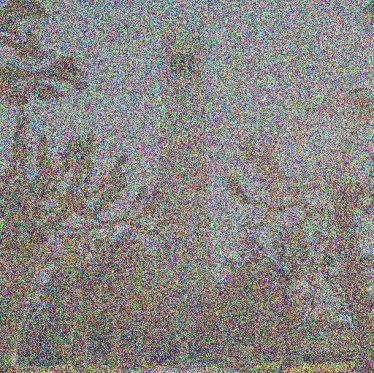

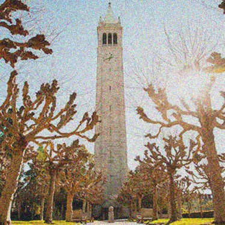
Classical denoising
The baseline without a learned model is a Gaussian blur: averaging neighboring pixels makes independent, zero-mean noise partly cancel. Because xt holds the image at only t times its brightness, I first divide by t, then blur:
Dividing restores the image's amplitude but scales the noise by the same factor, so the signal-to-noise ratio does not change. For each input I swept σ ∈ {1, 2, 4, 8, 16} (kernel size 6σ + 1) and kept the result with the lowest mean squared error against the clean image.
| t | Noise std after ÷ t | Best σ |
|---|---|---|
| 0.25 | 3.00 | 4 |
| 0.50 | 1.00 | 2 |
| 0.75 | 0.33 | 1 |
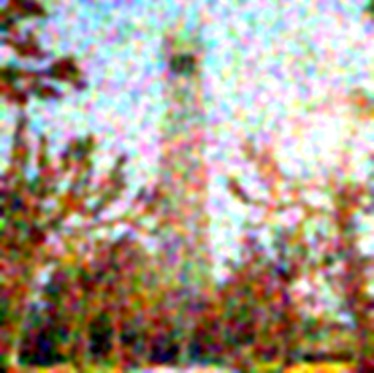
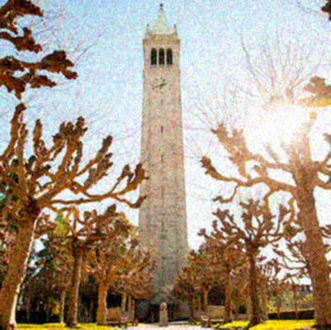
Why blur struggles
The best σ grows as the noise grows (1 → 2 → 4), and that is the whole trade-off: a blur cannot tell noise from detail, so removing more noise also removes more of the picture. At t = 0.25 the noise is three times stronger than the image, and even σ = 4 leaves plenty behind. What remains is correlated over a few pixels, so it shows up as color blotches rather than fine grain.
One-step denoising
The flow model is a much better denoiser. predict_velocity estimates which way the clean image lies from xt, and walking the remaining distance along that single direction gives a one-step estimate:
one_step_denoise is exactly that line, with one network call per input. The predicted velocity has the same shape (1×3×512×512), dtype (float32) and device as the input, and every value is finite.
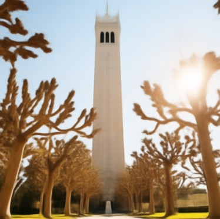
Why one step is blurry at high noise
The path gives x1 = xt + (1 − t)(x1 − x0) exactly, and the network is trained with squared error to predict x1 − x0. So the one-step estimate is the model's guess at the average of every clean image consistent with xt, i.e. E[x1 | xt]. When the noise is heavy, many differently detailed images fit, and their average is smooth.
Unlike the blur, though, this is an average over plausible images: the model knows what towers, trees and sky look like, so it removes the noise without leaving color blotches behind.
Visualizing velocity
In 1.3 the model added (1 − t)·v̂t to the noisy image. Because I know both the clean image and the exact noise, I also know what should have been added:
For each time I compute the predicted update, the ground-truth update, and a per-pixel error: the root-mean-square difference over the three color channels, computed before any display scaling.
How to read the panels
Each row shows the noisy input, the predicted update, the ground-truth update, and the error heatmap.
Updates are signed, so all six share one symmetric RGB scale of ±2.14 with zero at mid-gray. The limit is the 99.5th percentile of |update| over all six panels, so the brightest values saturate.
Heatmaps share one linear scale from 0 to 0.58, the 99th percentile of all three maps, so the three times can be compared directly.
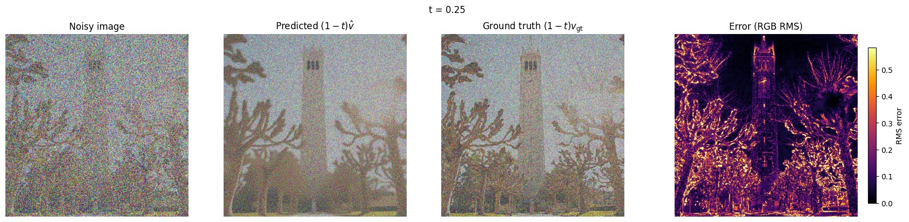
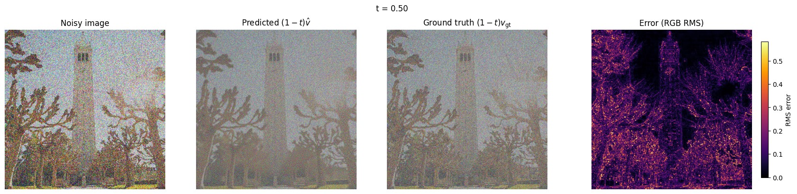
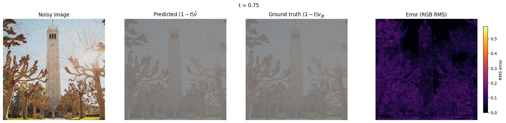
What the error shows
The error term is exactly the one-step error from 1.3: (1 − t)(v̂t − vgt) = x̂1 − x1. So the heatmap shows where the one-step estimate went wrong, and it matches what I saw there. At t = 0.25 the error follows the image's fine structure (every branch, the tower's edges, the clock and belfry, the benches), while the flat sky and the bright sun flare stay near zero. Those are the places where many different details are consistent with the noise. As t grows the error fades and loses that structure.
| t | Mean per-pixel RMS error |
|---|---|
| 0.25 | 0.152 |
| 0.50 | 0.102 |
| 0.75 | 0.066 |
The predicted and ground-truth updates look almost identical at a glance because both contain −xt, and with it all of the noise; only the heatmap separates them. Both also fade toward gray as t grows: the closer xt is to the image, the less there is to add.
Iterative denoising with Euler sampling
One step uses a single velocity for the whole trip, but the velocity field changes along the way. Euler integration takes a small step, predicts again, and repeats:
My euler_sample recomputes the velocity at every step, shortens the last step to 1 − t so it lands exactly on t = 1, and returns the final image plus the states at the start, after every fifth update, and at the end. To test it I used a constant velocity field v = 1, where the exact answer is known: starting from t = 0, 0.5 and 0.93 it makes 50, 25 and 4 velocity calls (the last a shortened 0.01 step) and ends at exactly 1 − tstart.
I then denoised the saved t = 0.50 input from 1.1 with h = 0.02, which takes 25 updates.
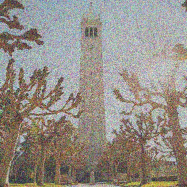
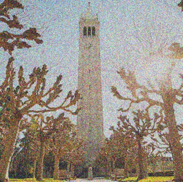
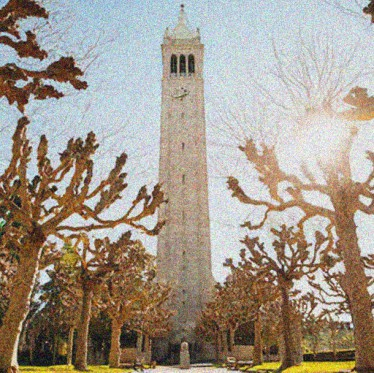
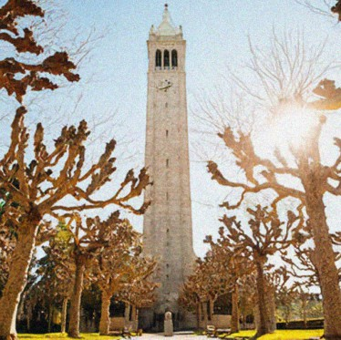
Comparing the three denoisers on the same t = 0.50 input
Average versus commitment
The blur keeps the noise as color blotches and softens every edge. The one-step estimate is clean but soft, for the averaging reason from 1.3. Euler is clearly the sharpest and the only result with crisp twigs and stone texture: each step removes a little noise and asks the model again, and as the image clears the model becomes confident enough to commit to specific detail instead of averaging over all the possibilities.
The zoom shows the catch. Euler's twigs follow the original's main branches, but the thinnest twigs and the clock hands are not the original ones. That detail was buried in the noise at t = 0.5, so the sampler drew a plausible version of it. The one-step result is a safe average; Euler is a sharp, believable guess.
Generating images from noise
Starting euler_sample at t = 0 from pure Gaussian noise denoises noise into a brand-new image. I drew five noise tensors (seeds 180–184) and integrated each from 0 to 1 in 50 Euler steps with "a high quality photo" and no guidance.
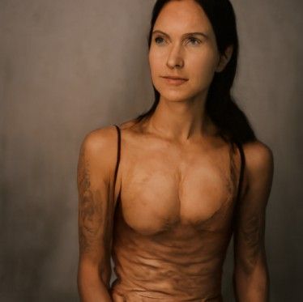
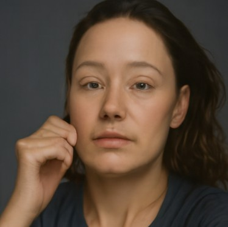
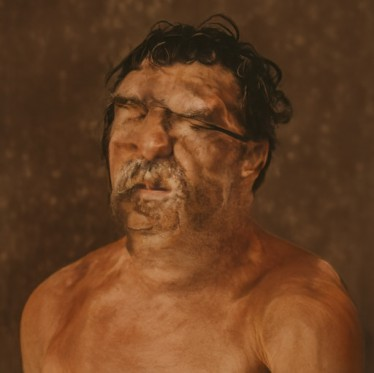
What I observed
All five samples are portraits of people, so this generic prompt clearly favors that subject for this model. Quality is inconsistent: two of the five (seeds 182 and 184) look like real studio photos, while the other three have melted or distorted faces and bodies. With only the conditional velocity, the prompt is weakly enforced and anatomy is unreliable. Classifier-free guidance in Section 2 strengthens the prompt to address exactly this.
Conditional generation and guidance
Section 1 conditioned on a fixed prompt, but the samples in 1.6 followed it only loosely. Classifier-free guidance makes the model take the prompt more seriously.
Classifier-free guidance (CFG)
At every step I evaluate the model twice on the same xt and t: once with the prompt (vc) and once with the empty prompt "" (vu). Their difference is the part of the velocity that comes from the prompt, and CFG pushes further in that direction:
cfg_velocity computes each prediction once and combines them; with w = 0 it returns the conditional prediction exactly (checked with torch.equal). I reran the five seeds from 1.6 with the same initial noise, 50 Euler steps and h = 0.02, swapping the plain conditional velocity for vcfg.
Without guidance (Section 1.6)
With CFG, w = 7
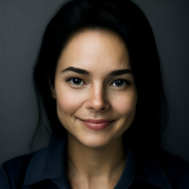
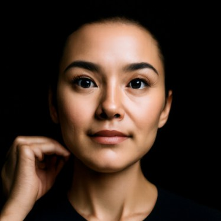
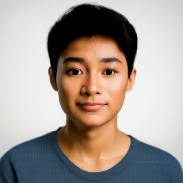
Quality up, diversity down
Every guided sample is a clean, sharp, well-lit studio headshot with coherent anatomy: the missing face of seed 180 and the distorted face of seed 183 are gone. Guidance also makes the samples more alike. All five are now centered, front-facing head-and-shoulders portraits against a plain backdrop, with stronger contrast than before.
The initial noise still sets the layout. Each seed keeps roughly the background tone of its unguided version, and seed 182 keeps its raised hand. CFG changes how strictly the model follows the prompt, not where the image starts.
Creative applications
The same guided sampler, pointed at new jobs: editing existing images, then combining two prompts into optical illusions. Throughout, h = 0.02, w = 7, and the unconditional branch uses the empty prompt.
Image-to-image editing
Section 1.5 showed that noising an image and denoising it again brings back something close to the original. Loosening "close" turns the same move into an editor, the idea behind SDEdit: noise the image to a starting time tstart, then let the guided sampler carry it back to t = 1. The model has to invent whatever the noise destroyed, and with the prompt "a high quality photo" it invents things that look like photographs.
edit does exactly this, with the same shortened last step as euler_sample (tstart = 0.25 takes 37 full steps and one 0.01 step). Every edit uses the same noise (seed 180), so the only thing changing along a row is how much of it is mixed in. Smaller tstart means more noise and a bigger edit.
Campanile (provided)
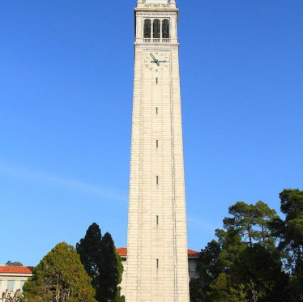
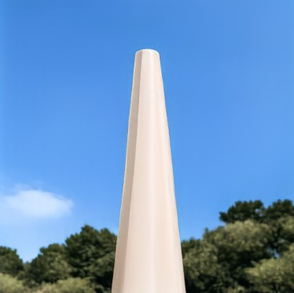
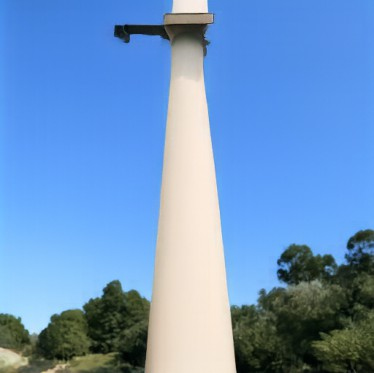
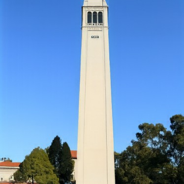
At t = 0.02 only a pale vertical shape against blue survives, and the sampler invents a smooth white column in front of a blurry backdrop. By t = 0.04–0.06 it is a tapering white tower under a clear sky with trees below, topped with invented details. A single dark belfry window appears at t = 0.10, the three arches and a small clock face come back at 0.25, and t = 0.50 matches the original down to the clock hands.
My image 1: a Minecraft creeper face
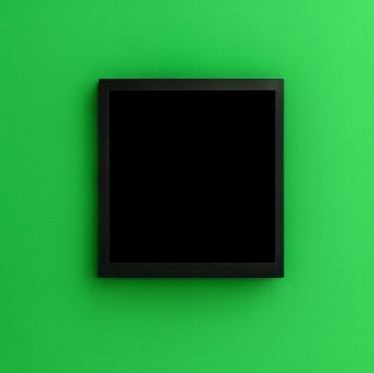
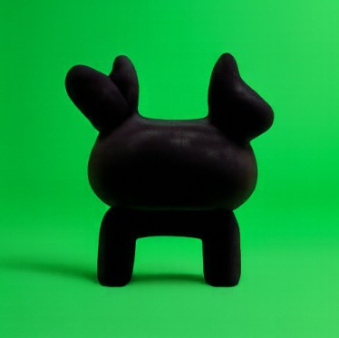
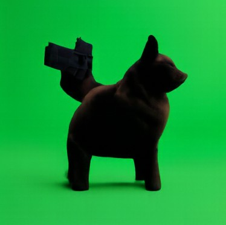
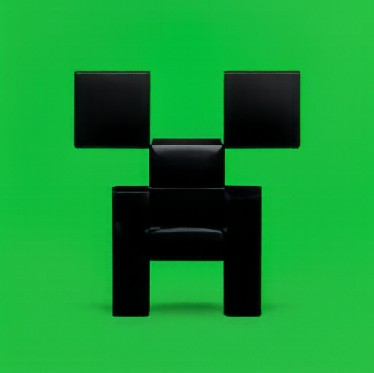
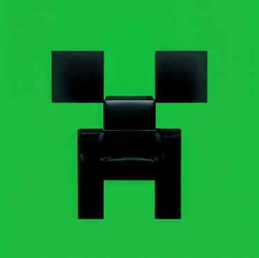
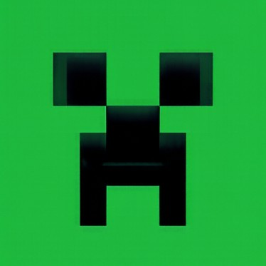
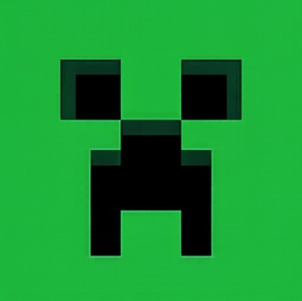
At low starting times the model never reads the pixel art as a face. At t = 0.02 the dark shape becomes a black picture frame on green, and at 0.04–0.06 a dark clay animal figurine. From t = 0.10 the face is back, but rendered as glossy black 3D blocks photographed against a green backdrop; it turns flat again at 0.25.
My image 2: a Minecraft villager
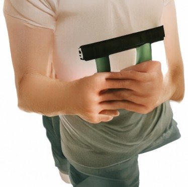
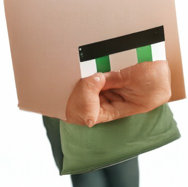
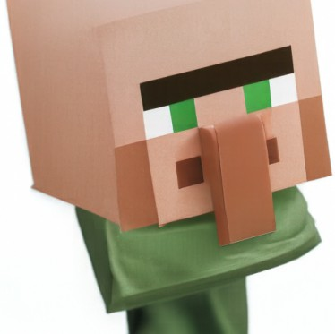
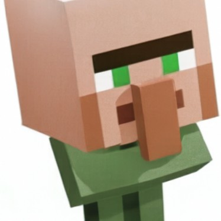
The skin-colored block head is read as a person. At t = 0.02 and 0.04 the sampler produces real portraits; at 0.06–0.10 the villager's brow and green eyes survive as objects held in front of someone's T-shirt, and at 0.14 the block head is back with a real hand over the nose. From t = 0.25 it is the villager again, as a smoothly shaded 3D head.
Web and hand-drawn images
This works especially well on non-photographic inputs, which the sampler pulls onto the manifold of natural images. I edited one image from the web and two drawings with the same seven starting times.
Web image: a cartoon dragon
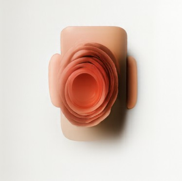
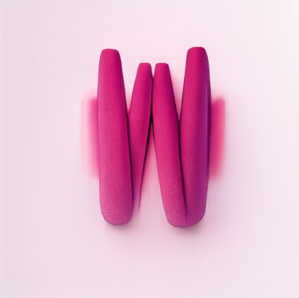
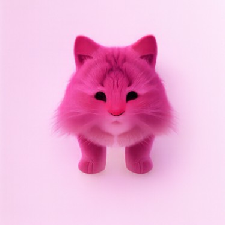
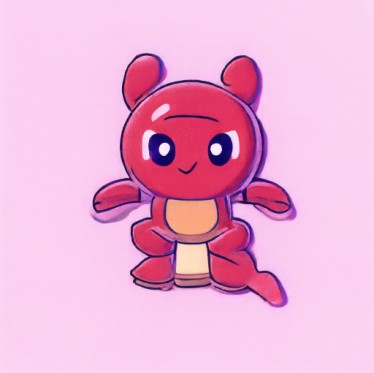
At t = 0.02–0.06 only the pink-and-red palette survives: a peach, rose-like object, pink felt shapes, then a fluffy pink cat. At t = 0.10 a round red cartoon creature with the dragon's eyes appears, at 0.14 a dragon with garbled text underneath, and from 0.25 the dragon is essentially unchanged, heart bubble included.
Hand-drawn image 1: a cat
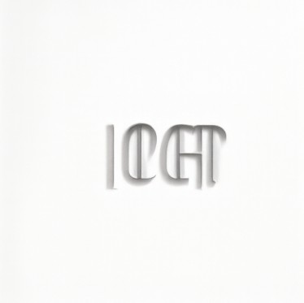
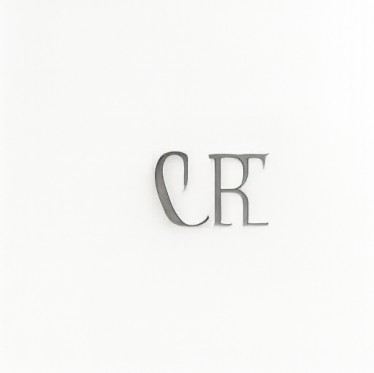
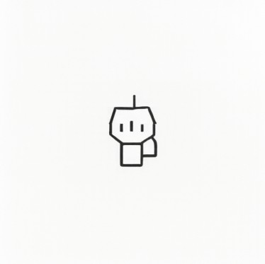
The cat is small and drawn with thin lines, which gives the sampler very little to hold on to. At t = 0.02 it makes a grey box on a shelf, at 0.04–0.06 the strokes turn into embossed letter shapes, and at 0.10 into a little robot doodle with an antenna. The cat is back from t = 0.14.
Hand-drawn image 2: a dog
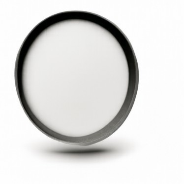
Thick, bold outlines survive the noise much better. At t = 0.02 the sampler draws a dark round ring, and at 0.04 the dog's outline is already there but filled with a sculpted human face. From t = 0.06 the drawing is back, and only small details such as the nose and the collar tag change after that.
How much noise it takes
Each input has a starting time where it becomes recognizable again: the bold-lined dog by t = 0.06, the Campanile and the creeper layouts by 0.10, and the cat, the dragon and the villager by about 0.14. Fine details (the clock face, the dragon's heart bubble, the creeper's flat 2D look) need 0.25. Strong, high-contrast outlines survive more noise than thin lines or flat color fields.
Below that time the model keeps only the layout and the palette, and it pulls everything toward photographs: pixel art becomes glossy 3D blocks or a clay figurine, a skin-colored block head becomes a real person, and a line drawing becomes embossed letters.
Text-guided image editing
Same procedure and the same seven starting times, but the generic prompt is replaced by one that describes the edit, so the model fills in what the noise destroyed with the prompt's content. I used short prompts: "sword" for the Campanile, "villager" for the creeper, and "cat" for the villager.
Campanile → “sword”
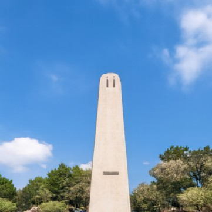
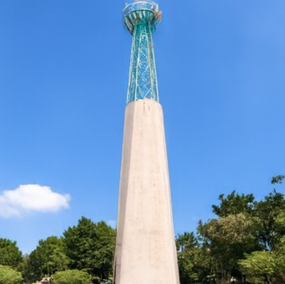
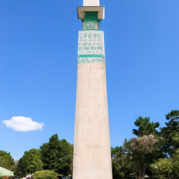
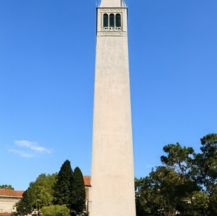
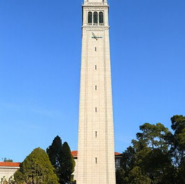
The one-word prompt barely registers: across all seven starting times the result stays a tower. Its tall, tapering white shape already resembles a blade, and the closest it gets to a sword is the teal, ornamented, hilt-like top at t = 0.04–0.06.
Creeper → “villager”
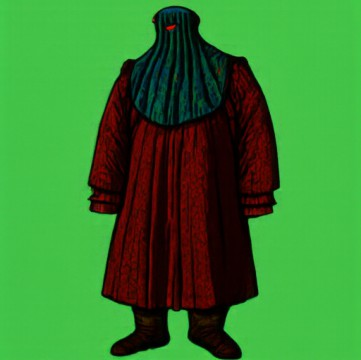
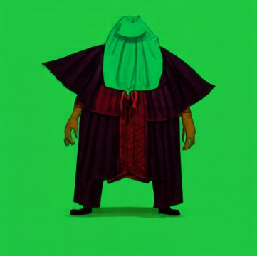
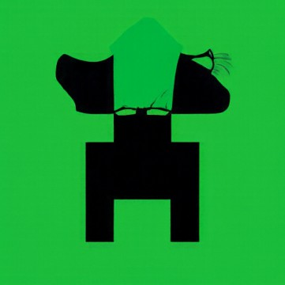
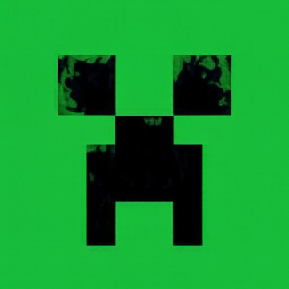
This prompt takes. At t = 0.02–0.06 the model paints a robed, medieval-looking villager on the creeper's green background, turning the dark mass of the face into a cloak (a villager in the everyday sense, not Minecraft's). At t = 0.10 the figure's hood sits on top of the creeper's mouth, and from 0.14 the creeper wins.
Villager → “cat”
No cat appears; the prompt changes the style instead. t = 0.02 is a watercolor fantasy illustration whose only cat-like hint is a large fluffy tail, 0.04 a watercolor head in profile, and at 0.06–0.14 the villager's head fills with painted flowers and leaves. From t = 0.25 the villager is back.
Prompt strength versus preservation
Small starting times give the prompt the most room and large ones preserve the input; the interesting range is in between (about 0.04–0.14), where the result keeps the input's layout but takes on the prompt. Only "villager" really took. "Sword" and "cat" changed the style and small details but not the subject: a bare one-word prompt gives the model little to work with, and a fuller description of the target (like "a photograph of …") would likely be needed for a stronger edit.
Visual anagrams
A visual anagram looks like one thing upright and another when rotated 180°. At each step I denoise xt with prompt p1, and the rotated xt with prompt p2, rotate that second velocity back, and average the two:
v2 = flip( vcfg( flip(xt), t, p2 ) )
v = (v1 + v2) / 2
flip rotates by 180°, flipping both spatial axes. Every Euler step therefore has to satisfy both prompts at once. visual_anagrams runs this from pure noise (seeds 180 and 181) for 50 steps.
Ring / Golden Gate Bridge
Only half works. Rotated, it is a clear Golden Gate Bridge framed by dark cliffs. Upright, the “ring” is just a faint oval of light in the clouds, and the bridge simply hangs upside down.
Dog / policeman
This one works. Upright it is a shaggy dog sitting in tall grass; rotated, the dog's body becomes a policeman's face under a peaked cap, with the dog's head still visible upside down at the bottom.
What makes a pair work
Both views are built from the same pixels, so the two subjects have to share one layout. A dark, roughly oval mass in a textured field can read as a shaggy dog one way up and a face under a cap the other way, so that pair succeeds. In the first pair the bridge's towers and cables dominated both orientations, and the thin, simple ring never formed beyond a faint oval.
Hybrid images
Hybrid images, as in Project 2 and adapted from Factorized Diffusion, mix two prompts by frequency instead of by orientation. At each step I predict two guided velocities from the same xt and t, then keep the low frequencies of one and the high frequencies of the other:
The high-pass is the prediction minus its blur, so the two parts split the spectrum and their sum is a full-size velocity, used directly in the Euler update. p1 sets what you see from far away and p2 what you see up close. Each result is shown at full size and at 64×64 to simulate distance.
Up close it is an expressive painting of a waterfall: white vertical streaks against deep blue, over rocks and a glowing golden pool. At 64 px the streaks merge and it reads as a dawn sky, deep blue above with a bright glow and a band of gold at the horizon. It works partly because a sky needs nothing but a color gradient; the broad waterfall streaks are still faintly visible even at 64 px.
Up close it is clearly a sepia rocket sketch. From far away the dog is weak: with some imagination the silhouette becomes an animal's head in profile (the upper-left fin as a snout, the porthole as an eye, the right fins as an ear), but the rocket still dominates.
Picking hybrid prompts
The distant prompt is carried entirely by low frequencies, the blurred shape and color layout, so it only works if that is enough to recognize the subject. A sky passes that test trivially, which is why the first hybrid reads well from afar but is not much of a surprise; a dog needs a specific silhouette, and here the rocket's outline won. A distant prompt with a strong, simple silhouette (a skull, a face) paired with a richly textured close prompt (a waterfall, a forest) should give the most convincing hybrids.
What I took away
Everything in this project is the same Euler loop, x ← x + h·v, with a different velocity plugged in. One big step gives the average of all plausible images; many small steps commit to one. CFG extrapolates away from the unconditional prediction, editing starts the loop part-way along the path, anagrams average two velocities under a symmetry, and hybrids split two velocities by frequency. Because the sampler only needs some velocity at each step, combining two predictions is enough to satisfy two constraints at once.
The practical lessons were about the knobs. The starting time is a dial between faithfulness and invention, the guidance weight trades diversity for quality and prompt adherence, and wording matters: bare prompts like "sword" and "cat" barely moved the image, while the illusions only worked when both subjects could share one layout.